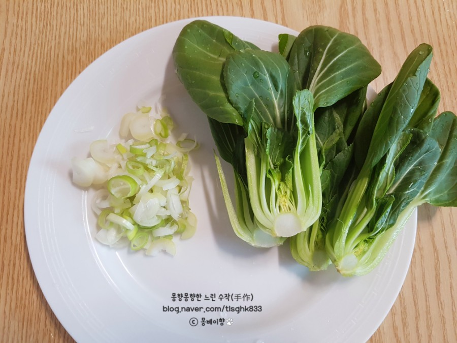
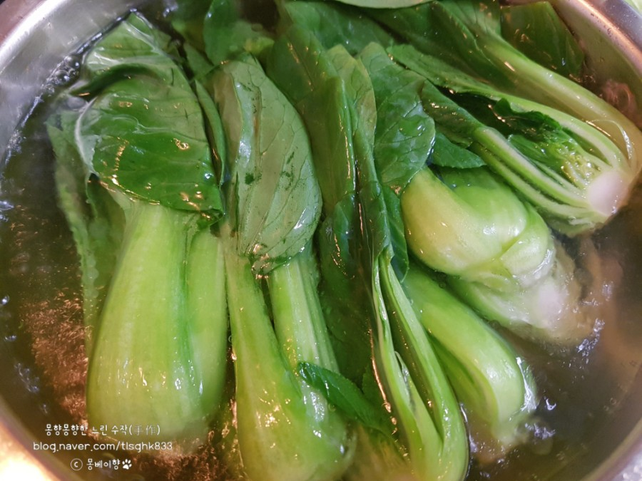
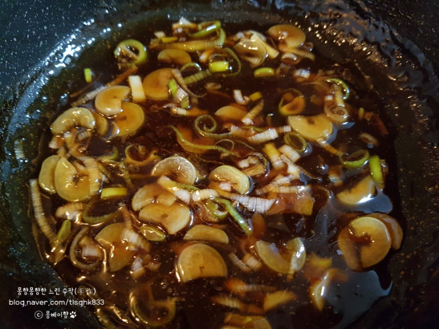

Chinese Food


재료 리스트
청경채10개 | 식용유 | 소금 | 대파 | 참기름
청경채 볶음 소스( 진간장 1/3컵 | 굴소스 한스푼 | 설탕 반스푼 | 물 1/3컵 | 전분 반스푼
레시피
1. 청경채를 깨끗하게 씻은 뒤 반으로 잘라주세요. 그리고 대파를 잘게 썰어주세요.

2. 물에 식용유 두 큰술과 소금 한꼬집 정도를 넣고 끓인 뒤 청경채를 숨이 죽을 정도로 익혀주세요.

3. 준비된 소스를 팬에 넣고 걸쭉해질 때 까지 끓여 주세요.
그 뒤 파와 참기름을 넣고 조금만 더 끓여주세요.

4. 삶은 청경채와 소스를 번갈아가며 발라주세요
청경채 볶음 완성 !!